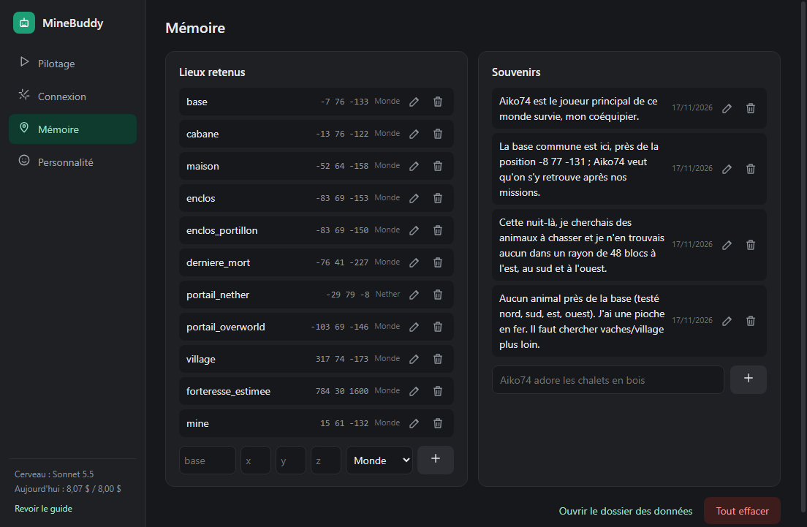

It plays with you
It follows you, joins you, gives you items and chats like a friend, in short messages. You pick its personality (funny, serious, pirate…).
Free · open source · made in France
Just talk to it in the game chat. It understands, plays with you, survives, builds, mines… and takes initiative on its own. No commands to learn.
For now, the app and the bot speak French only. English is planned.
Windows 10 / 11 · Minecraft Java Edition (tested on 26.1.2) · a Claude API key

Aiko74tu peux aller chercher des diamants ? on se retrouve à la base dans 30 min
ClaudeOk ! Je prends des torches et je descends. À tout à l'heure à la base !
A real teammate: it understands what you want, even typed fast with typos, and splits the work into steps by itself.
It follows you, joins you, gives you items and chats like a friend, in short messages. You pick its personality (funny, serious, pirate…).
It eats, hunts, cooks, wears armor and fights back. At night it takes shelter, or goes to bed with you so the night can pass. Stuck in water, it swims to the shore.
Wood, stone, ores, then any item: tools, weapons, armor, furnace, bed… It finds the recipe and what is missing.
A hut, a full wooden lodge on land it flattens itself, a pen for an animal farm it lures and breeds.
"Go mine for 30 minutes, then meet me at the base": it goes alone, digs down to diamonds while avoiding lava, and comes back on time.
Nether portal, piglin bartering, eyes of Ender, crystals shot with a bow… During our tests, it beat the dragon.
It never breaks your builds and never attacks a player.
No commands to learn: you write to it in the game chat, like to a friend. A few examples (it understands French for now).
suis-moifais-toi une pioche en pierreva miner 30 min puis rentre à la baseconstruis-nous un chalet iciretiens cet endroit, c'est la baseme sios plusdodot'as trouvé quoi aujourd'hui ?No file to edit: everything is set in the app, and a 3-step guide walks you through the first launch.



Download the installer and run it. Windows may say "Windows protected your PC" (the app is not signed): click More info, then Run anyway.
Create it on console.anthropic.com and paste it in the guide. It stays encrypted on your PC.
In Minecraft: Esc, Open to LAN, Start LAN World. MineBuddy finds it on its own: click Start, and your buddy joins and says hi.

The app
Free
Open source (MIT license). No subscription, no ads.
The brain (Claude)
Pay as you go
With your own API key, from Anthropic. It depends on how much it plays: in our tests, a whole night of autonomous play all the way to the dragon cost about $2.30.
You must be an adult to create an Anthropic account. Younger? Ask an adult to set it up with you.
Not yet: the app and the bot speak French for now. English support is planned.
No. On LAN, the bot joins your world in offline mode: no need to buy another account.
Minecraft Java Edition. It was tested on 26.1.2. Bedrock (console, mobile, Windows "Bedrock") is not supported.
No: it refuses to break building blocks (planks, bricks, glass…) and never attacks a player, even if someone insists. These rules are in its code, not just in its instructions.
Yes, like a real player. It goes back for its stuff on its own. Water and nights without armor are still its weak spots: start in a test world to get to know it.
LAN is the easiest. On a server, the server must accept offline players, or the bot needs a Microsoft account ("Microsoft account" option in the app).
No installer yet: Windows only for now. Developers can run it from the source code (Node.js).
In the app, click Signaler un problème (report a problem) at the bottom left: the report (without your key) is copied, you just paste it on the GitHub page.
The project is free. The easiest way to support it: a star on GitHub, and telling your friends.